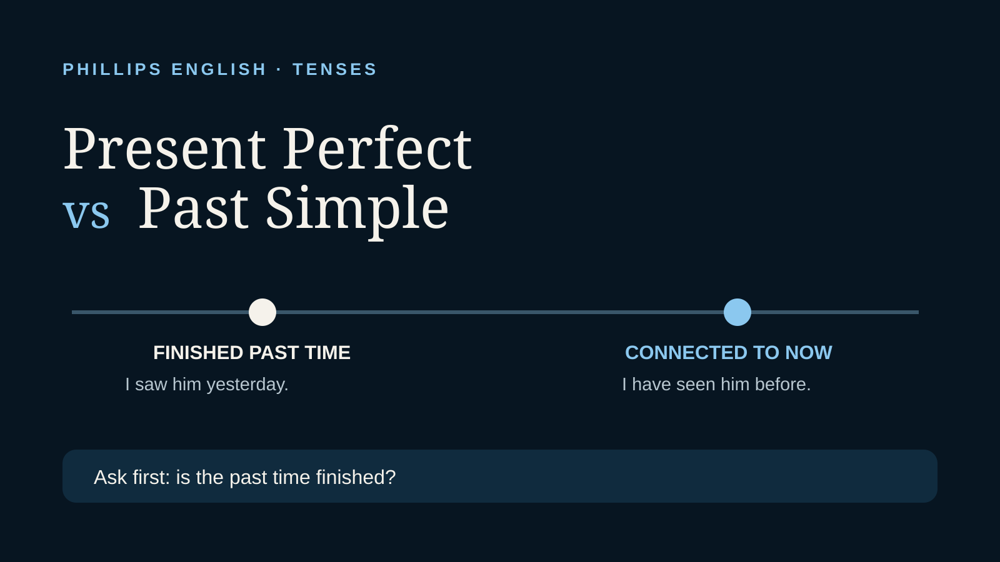

Use the past simple for a finished past time. Use the present perfect when the past is connected to now, the time is unfinished, or the exact past time is not the focus.
Past simple: finished past time
Use the past simple when the event happened in a finished time period or when you say when it happened.
I worked in Vietnam in 2024.
We met the client yesterday.
She sent the report last Friday.
Present perfect: connection to now
Use the present perfect when the experience or result matters now, when the time period is still open, or when you do not give a finished past time.
I have worked here for three years.
Have you ever been to London?
We have finished the report, so you can review it now.
The biggest mistake: finished time with the present perfect
I have seen him yesterday.
I saw him yesterday.
We have finished the project last week.
We finished the project last week.
Words such as yesterday, last week, in 2023 and two days ago normally point to a finished past time, so the past simple is the natural choice.
“I worked there” versus “I've worked there”
At an interview, “I worked in London for three years” usually describes a completed period of employment. “I've worked in London for three years” commonly means the experience began three years ago and continues now.
Neither is automatically the better sentence. Before choosing a tense, ask yourself: Am I describing a finished period, or something that is still true or relevant now? Context and time expressions help you decide.
Compare these two sentences
I lived in London for five years.
I have lived in London for five years.
The first usually suggests that the period in London is finished. The second suggests that the speaker still lives there now.
Experience without a finished time
The present perfect is very common for life experience when we are not saying exactly when something happened.
I have visited Japan twice.
She has never given a presentation in English.
Have you ever worked with an international team?
Professional English examples
We sent the proposal on Monday.
We have sent the proposal, so the client should have it now.
I worked for that company from 2020 to 2023.
I have worked in finance for six years.
Quick practice
1. I ___ the email yesterday. (send)
2. I ___ already ___ the email. (send)
3. She ___ here since 2022. (work)
4. We ___ them last month. (meet)
5. ___ you ever ___ a job interview in English? (have)
Answers: sent, have sent, has worked, met, Have you ever had.
The takeaway
If the time is clearly finished, start by thinking past simple. If the past action is connected to now and the exact finished time is not the focus, think present perfect. That one contrast will solve a large number of tense mistakes.
If you want corrections based on the English you actually use at work, you can try a free 25 minute lesson.